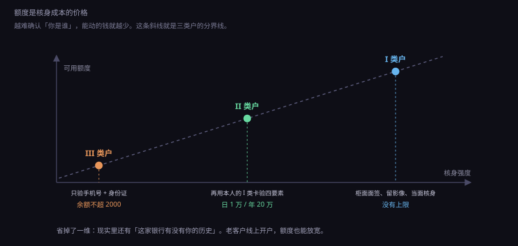
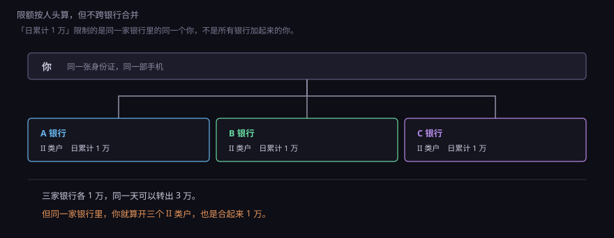
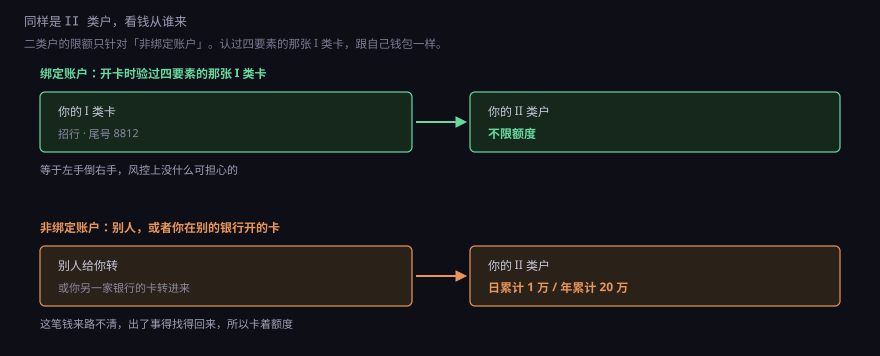
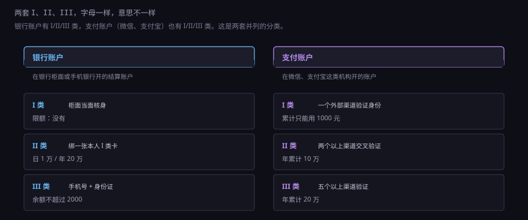
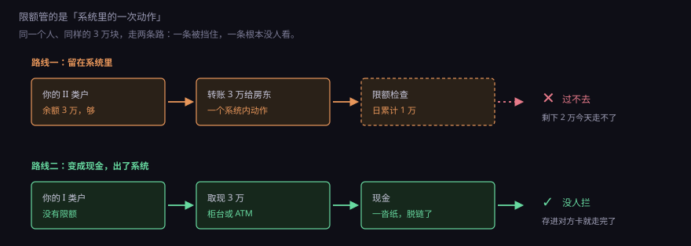

7.3.2
I、II、III 类户：
为什么你的二类卡一天只能转一万
约 0.65 万字 · 6 张图 · 同一个人的账户被分成三等， 每一等对应一种开户方式和一套限额。这套分级是一次妥协的产物
答案不在账户里，在开户那天。银行有多确定屏幕对面是你本人，就给你多大的额度。 这套「确认度换额度」的规则，2016 年底落地，改过一次， 至今仍在决定你手机里每张卡能做多大的事。
本节的小部分
7.3.2-1转不出去的两万块
月底，你要给房东转两万块房租。打开手机银行，卡里余额 53,218.40， 够。点转账，输入金额 20000，页面下方弹出一行小字：
当日剩余可转额度 8,732.00 元
你愣了一下。余额五万三，怎么就只能转八千多了？ 再点开「账户详情」，页面最上面写着三个字：II 类户。
类户。这个词你从来没注意过。它一直挂在那里， 开户那天在页面角落出现过一次，之后就被折叠进了某个二级菜单。 现在它拦住了你的房租。
你试了几种办法：改成 8000 转，成功；再转 2000，失败； 页面提示「超出当日累计限额」。也就是说，今天这张卡一共只能出去 1 万， 你早上买菜的 1,268 已经占掉了一部分额度。
解决办法有三个，都藏在很不起眼的地方：
- 分三天转，每天 1 万以内；
- 去柜台，柜员可以给你办「账户升级」，升成 I 类户；
- 如果这张 II 类卡绑过你的工资卡，从工资卡直接往房东账户转，不占这张卡的额度。
第三条是本节最有用的一句话，后面会解释为什么。现在先回到最前面的问题： 这张卡，当初是怎么开出来的。
7.3.2-2这张卡当初是怎么开的
回忆一下。三年前的某个中午，你在手机银行 App 里点「开立账户」， 流程大概是这样的：
- 拍身份证正反面；
- 人脸识别，让你眨眨眼、张张嘴；
- 输入一张本人已持有的银行卡号，再输一遍密码或者接收短信验证码；
- 设置这张新卡的交易密码；
- 两分钟后，一张虚拟卡出现在账户列表里，实体卡可以邮寄到家。
全程没有见到任何银行的人。这就是 II 类户。
对比一下另一条路：你带着身份证去网点，柜员抬头看你一眼， 对一下身份证上的照片，让你在屏幕上签字，摄像头拍一张现场照片存档， 然后给你办卡。这条路开出来的是 I 类户。
第三条路更简单：在 App 里只输手机号和身份证号，人脸都不用， 就能开一个账户。这是 III 类户。
三条路的区别，从头到尾只有一个：开户那一刻，银行有多确定屏幕对面是你本人。 柜面开，柜员看见了人、看了证件原件、留了影像，确认度最高。 线上开但绑了一张本人的 I 类卡，等于借用了那张卡当初面签时的确认结果——毕竟要输对卡号、密码、预留手机号， 同时在手的概率很低。只验手机号和身份证号，确认度最低：手机号可以是新买的， 身份证号在黑产手里是白菜价。
7.3.2-3三类户，分的是「怎么确认是你」
所以「I 类、II 类、III 类」不是三种卡，也不是三个产品等级。 它们是同一套账户体系里，按开户核身方式划出来的三档。 功能、限额都跟着这一档走。

这张图里最容易被忽略的是 III 类户。它的定位其实不是「小额的银行账户」， 更像一个电子钱包：能收钱（限本人绑定账户）、能花（限额消费缴费）、 不能转给别人、余额封顶 2000。它存在的意义是给那些「只想有个能付钱的东西」的场景用—— 比如给小孩的手表开个支付功能，比如临时用一个不常用的手机号收验证码。
II 类户是这三类里最尴尬也最常用的一个：功能上已经很接近完整体 （能存、能理财、能转账、能消费），只是不能存取现金， 以及对外转账有额度。绝大多数人手机上「点几下开出来的卡」都是这一类。
I 类户是唯一的「全功能」账户：现金、转账、消费、理财、代发工资、还房贷， 什么都能干，没有额度限制。它也是唯一必须当面开的。
7.3.2-4额度是核身成本的价格
为什么确认度低就要限额度？因为这是一笔很朴素的账。
银行（或者支付机构）在这件事上承担的风险，可以写成一个期望值：
期望损失 = 这笔钱被冒用的概率 × 金额
柜面开户，人证合一、留了影像，被冒用的概率极低，假设是万分之零点五。 远程开户，全靠几张照片和一次刷脸，概率高一个数量级，假设是万分之五。 同样是一笔 1 万块的流出，前者的期望损失是 0.5 元，后者是 5 元。
如果完全不限额，一个远程开出来的账户理论上可以被骗走几十万， 期望损失就上千元——而开这个户的成本可能只有几块钱。 这门生意做不下去。
但也不能因此不给开。远程开户是刚需：全国有大量人一年去不了一次网点， 互联网金融、农村金融、异地务工都靠它。所以监管选了一条中间路： 照开，但把单次损失的天花板压到能承受的水平。

III 类户余额封顶 2000，就是这条线的极端形态：就算这个账户完全被别人控制， 损失也就 2000。2000 块这个数字不是随便定的，它大致对应 「一笔小额纠纷的处置成本」——低于这个数，追起来不划算，索性把上限压到不追也无所谓。
理解了这个逻辑，很多看起来莫名其妙的规定就通了。 比如为什么 II 类户不能存取现金：现金一旦取出来就脱离了账户， 后面流向哪里完全看不见，这是整套分级管理最怕的事。
7.3.2-5具体数字：一份对照表
前面讲的是逻辑，下面是落地成条文的样子。 这套规则出自 2016 年 9 月央行的 261 号文，2016 年 12 月 1 日起执行； 2018 年 1 月的 16 号文改过一处（III 类户余额上限从 1000 提到 2000）。
| 项目 | I 类户 | II 类户 | III 类户 |
|---|---|---|---|
| 开立方式 | 柜面，或有人值守的自助机具 | 线上，需绑定本人 I 类户验证 | 线上，验手机号与身份证 |
| 存款 | 可以 | 可以 | 可以（限绑定账户转入） |
| 取现金 | 可以 | 不可以 | 不可以 |
| 转账给他人 | 可以，无限制 | 可以，日 1 万 / 年 20 万 | 不可以 |
| 消费与缴费 | 可以，无限制 | 可以，与非绑定转账合并计算额度 | 可以，日 5000 / 年 10 万 |
| 购买理财 | 可以 | 可以 | 不可以 |
| 余额上限 | 无 | 无 | 2000 元 |
注意表格第五行 II 类户那一格：那里的「日 1 万」不是一个动作 1 万， 而是转账给他人和消费缴费合起来日累计 1 万。 你在淘宝花掉 3000，当天就只剩 7000 能转给别人。
这些数字会变，而且改过不止一次。看到和自己经验不符的时候， 以央行最新文件或者开户行的口径为准——银行 App 里的「账户详情」页， 通常会直接写明你这个户的类别和当日剩余额度。
7.3.2-6限额到底怎么算：按人、按行、不跨行
「日累计 1 万」这句话里藏着一个主语问题，很多人栽在这里： 这个 1 万，是这一张卡 1 万，还是我所有二类卡加起来 1 万？
答案是后者，但要加一个限定：同一家银行里，同一个人的所有 II 类户合起来 1 万。 你在招行开三个 II 类户，今天总共还是只能出去 1 万，不是 3 万。
但换一家银行，额度重新算。

为什么不做成全行业合并？因为那需要一个实时汇总所有人额度的中央系统， 每家银行在转账前都要去问一次「这个人今天还剩多少」。 技术上做得到，成本很高，而且没必要——真正要洗钱的人不会靠三个二类户凑三万块。
这一点很关键：限额的设计目标不是堵死，是提高成本。 把一笔十万的赃款拆成十笔，要用十张不同银行的卡、花十天， 每多一步就多一次暴露的机会，多一个被抓的环节。 犯罪的经济学里，成本上升往往比彻底封堵更有效。
7.3.2-7绑定账户：二类卡的正确用法
现在回到第一节那三个解决办法里的第三条。它是 II 类户设计里最实用、 也最少人知道的一条：
II 类户和它的绑定账户之间转账，不受额度限制。
开 II 类户时要绑一张本人的 I 类卡，那张卡就是「绑定账户」。 你跟它之间的资金往来，等于自己左手倒右手，风控上没什么可担心的， 所以监管没给这条路设额度。而别人给你转、或者你拿别的银行的卡转进来， 都算「非绑定账户」，日 1 万 / 年 20 万。

这条规则催生了一种很常见的用法：把 II 类户当零钱卡。
工资卡是 I 类户，里面放着大部分钱，不绑任何支付平台。 需要花钱的时候，从工资卡转一笔到 II 类卡——这一步不限额度。 II 类卡绑在微信、支付宝上，日常吃饭、网购、打车都走它。 卡里常年只留三五千。
好处是：就算这张卡被盗刷、被骗、被拿去注册什么奇怪的东西， 损失上限就是卡里的余额。而真正的存款在一张从不在网上用的 I 类卡里。 这不是什么高深技巧，是 II 类户这个产品被设计出来时默认的使用姿势之一。
反过来说，如果你是做小生意的，客户要给你打钱， 别用 II 类户收款——那是非绑定账户转入，一天只能进 1 万。 这个坑很常见：有人拿二类卡当收款码绑定的卡，结果旺季一天进账几万， 后面的钱全卡住了。
7.3.2-8一家银行只能有一个 I 类户
261 号文里还有一条，影响面比限额更大： 同一个人在同一家银行，只能开一个 I 类户。
这条是从 2016 年 12 月 1 日开始执行的。当时很多人在同一家银行有好几张卡 （工资卡、还房贷的卡、以前单位发的卡），这些存量账户需要清理： 银行会要求你到网点确认，保留一个作为 I 类户， 其余的降级成 II 类或 III 类，或者销户归并。 那段时间不少人收到过「您在我行开立了多个账户，请前往网点核实」的短信， 就是这件事。
现在还想去招行开第二张「什么都能干」的卡？不行。 你只能开 II 类户，除非把原来那张销户或者降级。
这里有个细节值得说清楚：「同一家银行」指的是法人，不是网点。 工行北京分行和工行上海分行是同一个法人下的两个分支机构， 你在两边开的卡，算在同一个「一家银行」里。 所以异地工作的人常遇到的困惑——「我在老家办过工行卡，怎么在这儿办不了」—— 原因就在这里。
这条规定还有一个副作用：它让 I 类户变成了一种稀缺资源。 一个人在一家银行只有一个，全国十几家主要银行加起来也就十几个。 而黑产需要的正是这种「功能完整、能大额进出」的账户。 于是「卖卡」出现了：有人用自己的身份证去开卡，几百块卖给收卡的人。 这是下一节断卡行动要处理的问题。
7.3.2-9升级、降级，和你没注意过的那次变更
规则定下来之后，日常真正会碰到的动作只有三个：升级、降级、被限制。 三件事基本都只能在柜面或者人脸核验之后办，没有一个能在 App 里一键完成。
升到 I 类。带身份证、本人到场，说明用途。 有的银行要求提供工作证明或在职证明，有的要求先存入一定金额。 办完之后卡号不变——账户主体没变，变的只是这个户的「类别」这一个属性， 相当于把上一节说的那一行记录里的某个字段改掉了。
被降级。存量清理时，一个人在同一家银行的多个账户， 只能保留一个 I 类，其余降成 II 类或 III 类。 很多人是在某天突然发现「这张卡怎么转不出去了」， 才回头翻短信，发现有通知躺在几个月前的垃圾短信里。
被限制。严格来说这不叫降级，但效果一样： 连续一两年没有交易的「睡眠户」，银行会暂停它的非柜面业务， 卡变成只能进不能出。要恢复得做一次人脸验证，或者去柜台。 这不是惩罚，是防着这张卡被别人捡去用——一张长期不动、 突然开始大额进出的卡，是所有风控模型里最高危的形态。
还有一个很实用的坑：II 类户当工资卡，超过一万的部分进不来。 代发工资在系统里算「非绑定账户转入」，同样受日 1 万、年 20 万的限制。 月薪一万五的人拿 II 类户收工资，多出来的五千会被退回或挂账。 这就是为什么 HR 反复强调「请提供 I 类卡」——不是流程洁癖， 是钱真的会打不进去。
7.3.2-10别搞混：两套 I、II、III
到这里必须澄清一个高频误解。你在网上搜「二类户限额」， 会看到两种截然不同的答案：一种说日 1 万，一种说年 10 万。 两个都对，因为说的是两套不同的东西。
2015 年底，央行发了《非银行支付机构网络支付业务管理办法》， 把支付账户（微信支付、支付宝里的那个余额账户）也分成了 I、II、III 类。 分类的依据是「验证了几个外部渠道的身份信息」： 一个渠道、两个以上、五个以上。

所以你在银行听到的「我是 I 类户」，和在支付宝里看到的「I 类账户」， 是两个体系里的两个东西，不能互相引用。 拿「我是银行的 I 类户」去要求支付账户放宽额度，柜台和客服都不会认。
还有一个更容易混的点：支付账户的限额，管的是用余额付款。 如果你在支付宝里直接选「用银行卡支付」，那笔钱走的是银行通道， 受银行账户的额度约束，跟支付账户的 20 万没关系。 很多人以为「支付宝一年只能花 20 万」，其实是把这两条通道搞混了； 真正受限的是「用余额付」这条路径，而余额里的钱本来就是从银行卡转进来的。
7.3.2-11限额挡不住的那条路
讲到这里，很容易产生一种「制度挺严密」的感觉。 但把两张图叠起来看，会看到一条明显的缝。

限额管的是「系统里的一次动作」。钱一旦变成现金，就掉出了这条链， 后面的去向没有一条记录。取现、给现金、存进别人账户， 这三步里限额一次都没出现。
那反洗钱靠什么？靠另外三套东西：
| 手段 | 管什么 | 触发方式 |
|---|---|---|
| 大额现金登记 | 单笔 5 万元以上的现金存取 | 办理时填用途、留身份信息 |
| 可疑交易报告 | 短期内分散转入集中转出、快进快出、与身份不符的流水 | 系统模型自动报警，人工复核后上报 |
| 账户行为监测 | 长期不动突然活跃、夜间高频交易、多设备登录 | 银行风控系统实时打分，高了就限制非柜面业务 |
这三套东西的共同点是：不看单笔金额，看模式。 限额是硬的、可预测的，绕过去只要多开几张卡； 模式识别是软的、说不清的，你很难知道自己哪一步触发了模型。 真正的防线在后面这一层。
7.3.2-12三类户分别适合谁
把规则变成可用的建议，大概是这样：
| 类别 | 适合放什么 | 为什么 |
|---|---|---|
| I 类户 | 工资、大额存款、房贷还款、不绑任何支付平台 | 唯一无额度限制的账户，也是一旦出事损失最大的账户，所以尽量少露头 |
| II 类户 | 日常消费、网购、外卖、给孩子的零花钱 | 从 I 类卡转入不限额度，对外转出有天花板，损失可预期 |
| III 类户 | 手表支付、公交地铁、只用来收验证码的副号 | 余额封顶 2000，不能转给他人，出事也就这些 |
想知道自己名下到底有几张卡、分别是什么类别，有个官方渠道： 云闪付 App 的「一键查卡」。它是中国银联做的， 能查到你名下在主要商业银行开立的银行卡列表， 包括卡号后四位、开户行和账户类型。这个功能是 2021 年上线的， 初衷就是解决「我到底有多少张卡自己都不知道」这个问题。
查出来之后建议做一件事：把不用的卡销掉。 留着不用的 I 类户，既占着「一家银行一个」的名额， 又是一个长期不动、突然被激活也不会引起注意的账户—— 这正是黑产最喜欢的形态。
7.3.2-13分级管理撑不起什么
这套制度运行了快十年，效果要分开看。
有效的地方很实在：远程开户的风险被量化、被隔离了。 一个 II 类户最多被骗走一万，一个 III 类户最多两千， 这把「开个户」这件事从「可能倾家荡产」降到了「可能损失一个月的饭钱」。 没有这套分级，2016 年之后那波移动支付和互联网理财根本铺不开。
但它撑不起的东西也很清楚：
- 挡不住主动卖卡。限额管的是「被骗」，管不了「自愿」。 有人拿自己的 I 类户去卖，几百块一张。所以 2020 年有了断卡行动， 惩戒手段是五年内不能开新户、不能使用非柜面业务、征信留记录。
- 挡不住跑分。用别人的账户过账，钱在几十张卡之间转一圈， 每张卡都在限额内，每笔都是合法转账。这种模式只能靠流水模型识别。
- 也不解决冒名开户。核身环节本身有漏洞， 出现过批量冒名开户的案件。这说明「刷脸 + 绑定卡」这套验证， 在特定条件下是可以被绕过的。
- 更根本的一点：分级管理的假设是「核身强度可以量化成等级， 等级可以线性对应风险」。但真实的身份盗用不是线性的， 一个被熟人拿走的手机，比一个陌生人伪造的身份证危险得多。
所以这一节的结论不是「分级很好」或者「分级很糟」，而是： 它是一套把风险切成块、再按块定价的制度。 它不消灭风险，只是让风险变得可计算、可承受。 你在手机上点两下开出一张卡，两分钟到账、随时能花， 这份便利的价格就是那道一万块的额度——它不是你被限制了， 是你用确认度换来的授信。
下一节顺着「确认度」往下走：开户为什么这么麻烦。为什么银行非要问你工作单位、收入来源、开户用途，为什么身份证丢了会被冒名办卡，为什么「断卡行动」要冻结那么多人的账户。那是 KYC 与反洗钱的世界，规则更细，误伤也更多。
自测：你真的理解了吗
- I、II、III 类户的分界依据是什么？不是卡的种类，那是什么？
- II 类户「日累计 1 万」是按户算还是按人算？跨银行合并吗？
- 为什么 II 类户跟你绑定的 I 类卡之间转账不限额度？
- 同一家银行能不能开两个 I 类户？「同一家银行」指法人还是网点？
- 银行账户的 II 类户和支付账户的 II 类户，限额为什么不一样？
看答案
- 开户时的核身方式。柜面面签是 I 类，线上绑本人 I 类卡是 II 类，只验手机号和身份证是 III 类。功能与限额跟着这一档走。
- 按人、按行：同一人在同一家银行的所有 II 类户合起来日 1 万、年 20 万；换一家银行重新计算，不跨行合并。
- 因为绑定账户在开户时已经通过了四要素验证，账户之间的划转等于自己转给自己，风控上没有新增风险，所以监管没设额度。
- 不能，一家银行法人只允许一个 I 类户。指的是法人，工行北京分行和上海分行算同一家。
- 因为这是两套并列的分类：银行账户按 2016 年 261 号文管，支付账户按 2015 年非银行支付机构网络支付管理办法管。字母相同纯属都是分三级，含义和额度都不同。